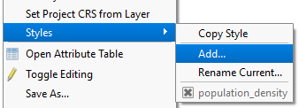
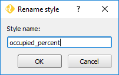
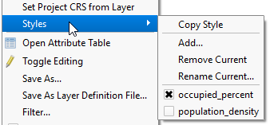

As it is, any changes to the layer's style will be applied to the current style. So, before we start setting the occupied house units percentage's style, we need to create a new style to be able to do changes without affecting what we "stored" in population_density.
In the Layers panel, right-click the Wake BlockGoup 2010 layer and choose Styles > Add...

Set the Style name as occupied_percent and click OK.

To confirm that the style was renamed, right-click the Wake BlockGoup 2010 layer and hover Styles. There should be two styles now: population_density and occupied_percent. Besides, the occupied_percent style should be selected.

We are ready to set the new style.